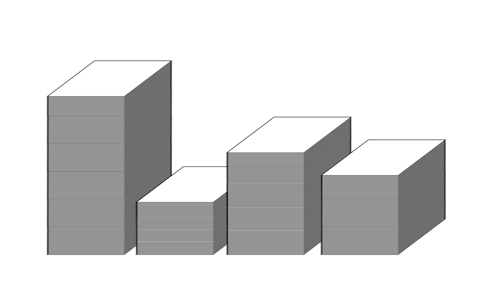
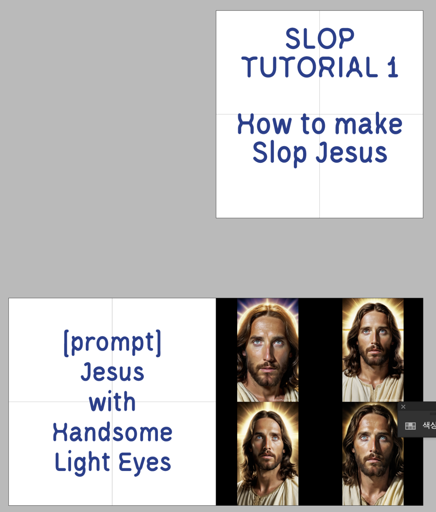
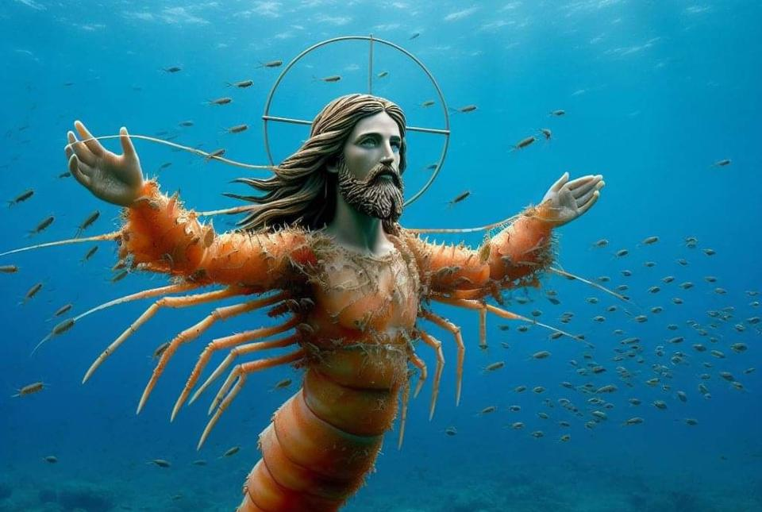
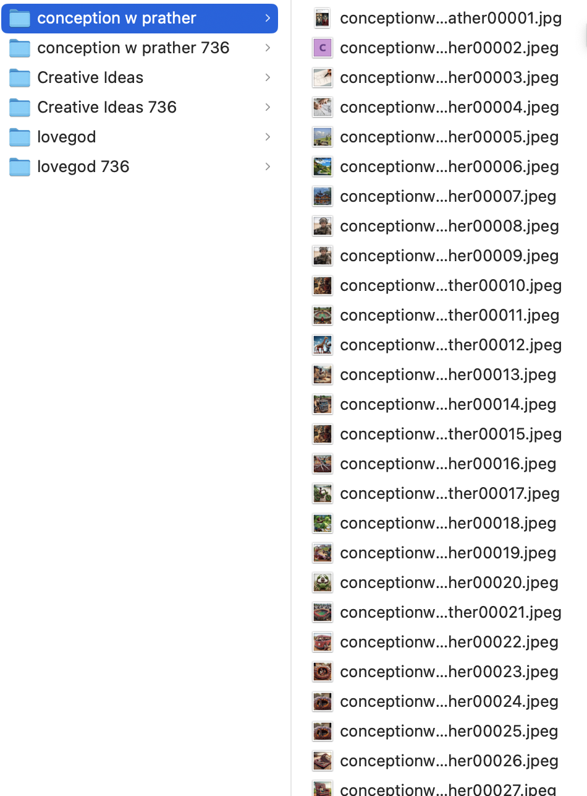
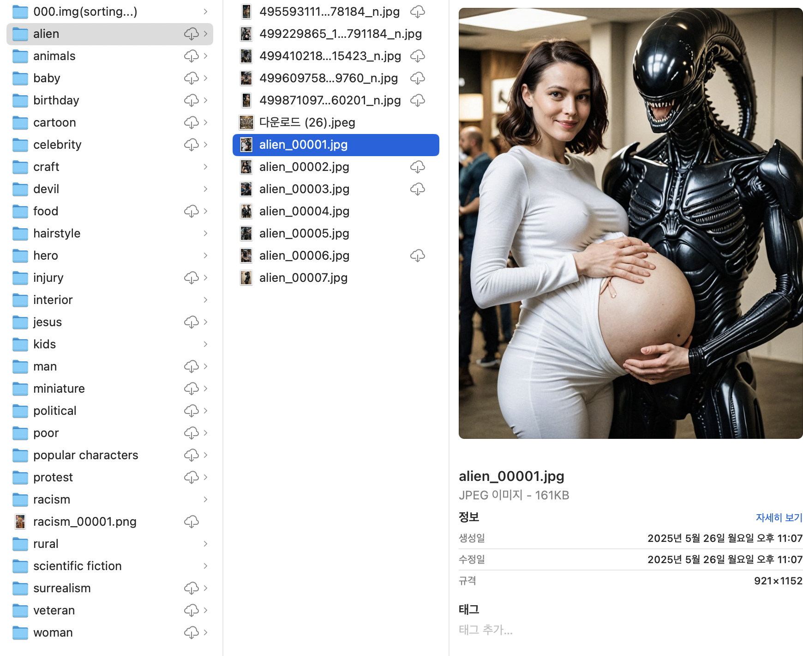

문득 내가 인터넷 쓰레기장을 배회하고 있다는 생각이 들었다.
Italian Brainrot 영상을 보고 사람들이 이걸 왜 좋아하는지 궁금해졌고, AI로 생성된 콘텐츠에 대해서 조금 더 찾아보던 와중 AI Slop이라는 개념을 접했다.
AI Slop을 이해하기 위한 시도
A. 보도자료, 아티클
SLOP 콘텐츠는 콘텐츠가 AI로 만들어졌음을 인지하기 어려워하는 고령층을 타겟으로 한다. 인도, 베트남, 중국 등 비 서구권 국가 출신의 사람들이 Side job으로써 콘텐츠를 생성하기도 한다.
B. 직접 사례 조사하여 데이터셋 구축: 1차 2차
3차 데이터 수집
이번에는 한 문헌자료를 기반으로 하여, 이미지를 수집하는 플랫폼을 페이스북으로 한정하고, 그 안에서도 지속적으로 AI 생성 이미지를 업로드하는 계정을 몇 개 정해 해당 계정에서만 이미지를 수집하는 방식을 채택했다.
재구성
수집한 이미지는 영상과 전단지로 재구성했다. 
추후 1:1000 비율에 맞춰 종이 더미를 쌓을 예정
앞으로는
1. Slop Jesus Tutorial

2. 가짜 계정 만들기: 생태계 일부가 되기
3. Slop을 재현하는 인터랙티브 비디오
4. Slop Video에 대한 탐구
5. 다른 인터넷 쓰레기들
인터넷 쓰레기장 안에서 생성되고 유통되는 이미지들을 수집하고 재조합한다: 일상적으로 지나치는 이 이미지들은 어디에서 왔고, 누구를 위해 작동하고 있는가?
AI 슬롭(AI slop) 또는 슬롭(slop)은 생성형 인공지능 기술을 이용해 만든 저품질의 미디어(글, 이미지 등)를 지칭하는 말로, 본질적으로는 노력, 논리, 목적이 결여된 콘텐츠를 의미한다. 2020년대에 등장한 이 용어는 ‘스팸’과 유사한 경멸적 뉘앙스를 가지고 있다.[wikipedia] AI Slop
Di Placido, Facebook’s AI-Generated ‘Shrimp Jesus,’ Explained, Forbes
새우 예수: 예수 그리스도를 게와 새우와 같은 바다 생물과 융합시킨 초현실적이고 종종 불안한 묘사. 해당 이미지는 AI가 생성한 것으로, 최근 페이스북에서 참여 해킹의 한 형태로 확산되고 있는 AI 생성 스팸의 파생물이다. 이러한 이미지의 대부분은 예수를 보다 전통적으로 묘사한 것이지만, ‘새우 예수’는 온라인 평론가들로부터 황당한 반응을 불러일으키며 이 현상에 대한 더 많은 관심을 불러일으키고 있다.
젊은 인터넷 사용자들의 경우는 AI 이미지의 부상을 직접 목격했고 그 단서를 찾아내는 법을 배우며 적응해 왔다. 하지만 일반적으로 노인들은 AI가 생성한 이미지를 인식하기가 더 어렵다. ... 젊은 사용자들이 틱톡, 인스타그램, X(트위터)로 몰려드는 반면, 시니어 사용자들은 여전히 Facebook에 남아있다. 따라서 Facebook은 수단과 방법을 가리지 않고 참여를 극대화하려는 스팸 계정에서 게시하는 AI 생성 쓰레기로 꾸준히 채워지고 있다. 이 현상을 추적한 스탠포드 인터넷 관측소 연구에서는 이러한 스팸 계정이 대량의 봇 팔로워를 구매함으로써 참여도, 알고리즘 도달 범위 및 신뢰도를 높인다고 주장했다. 이러한 AI가 생성한 이미지를 가능한 한 많은 실제 Facebook 사용자의 타임라인에 노출시켜 콘텐츠 농장이나 기타 저품질 사이트로 리디렉션하는 것이 목표이다.
- AI 제작으로 의심되는 이미지들을 지속적으로 업로드하는 계정 중 하나를 지정한다
- 하나의 계정이 올린 이미지를 모두 저장한 뒤 시간순으로 파일명을 정리한다
- 
- 또다른 계정을 타겟으로 반복한다

데이터 수집 1차: 플랫폼을 한정하지 않고 구글 검색을 통해 나온 모든 플랫폼을 통해 수집한다
[실패] 충분한 양의 이미지를 얻을 수 없었다.

데이터 수집 2차: 수집 플랫폼을 페이스북으로 한정한다. 이미지 유형 위주로 수집이미지를 분류한다
[실패] 이 이미지는 외계인으로 분류해야 할까? 여성으로 분류해야 할까?
DiResta, R., & Goldstein, J. A. (2024). How spammers and scammers leverage AI-generated images on Facebook for audience growth. Stanford Internet Observatory.
우리는 게시물의 패턴을 분석했습니다: 페이지가 단일 AI 생성 이미지를 사용한 경우 분석 대상에서 제외되었지만, 동일한 디자인 스타일(예: Midjourney)을 공유하는 사진 50장 이상을 게시한 경우 분석에 포함시켰습니다. 피카소가 블루 페리오드를 겪었듯이, 페이지들도 종종 특정 기간을 거쳤습니다. 수십 개의 눈 조각품; 수십 개의 수박 조각품; 수십 개의 목재 조각품; 수십 개의 예술적으로 배열된 스시 접시—각각 매우 유사한 스타일을 가지고 있었습니다. 그림 12에서는 이러한 페이지가 다양한 기간을 거쳐가는 모습을 보여주는 스크린샷을 제공합니다.